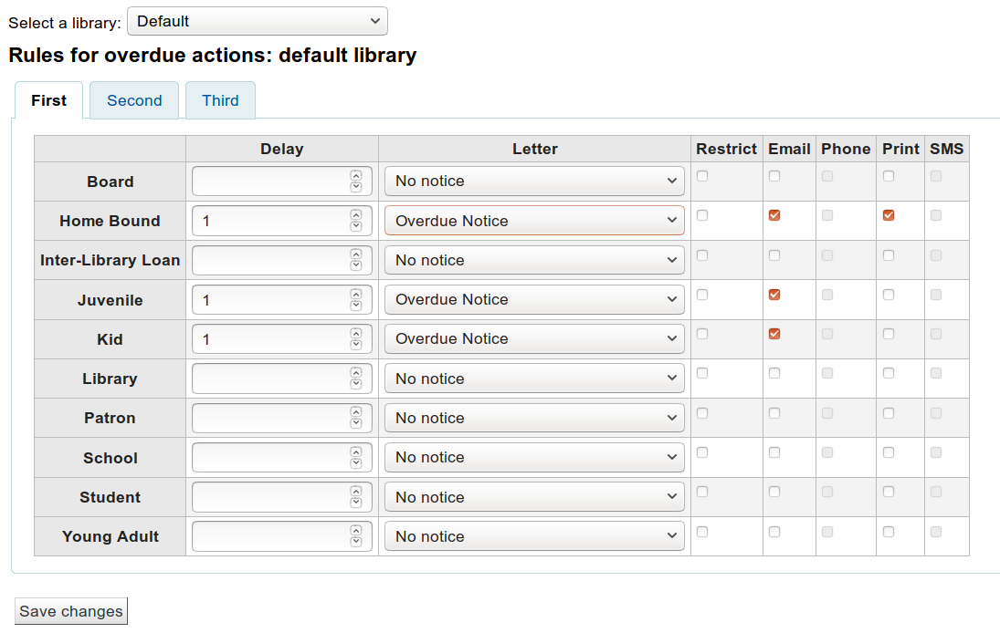
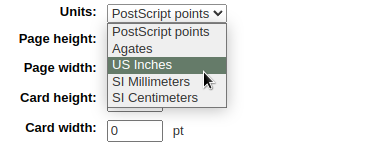
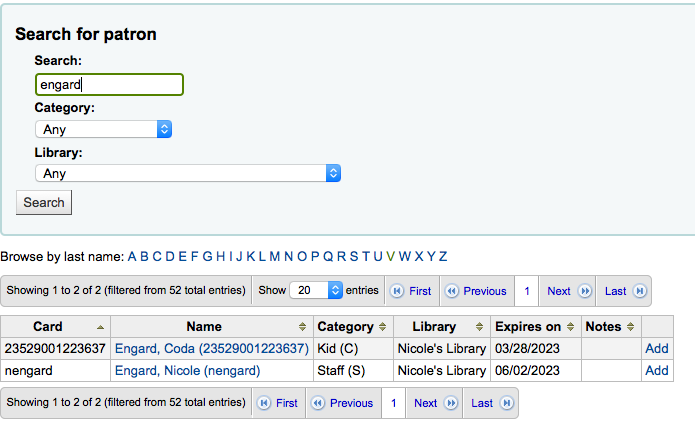
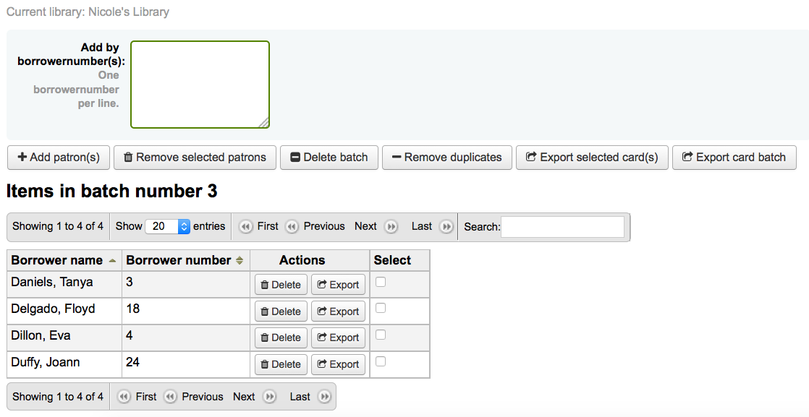
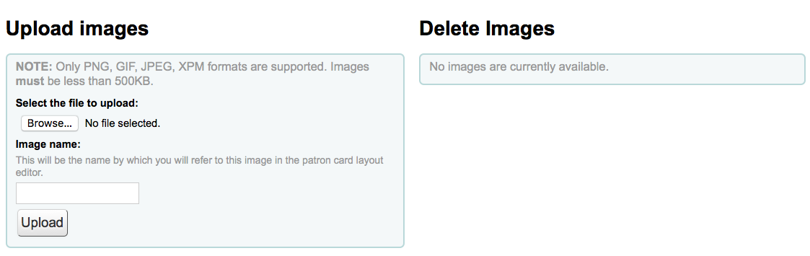
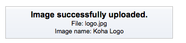
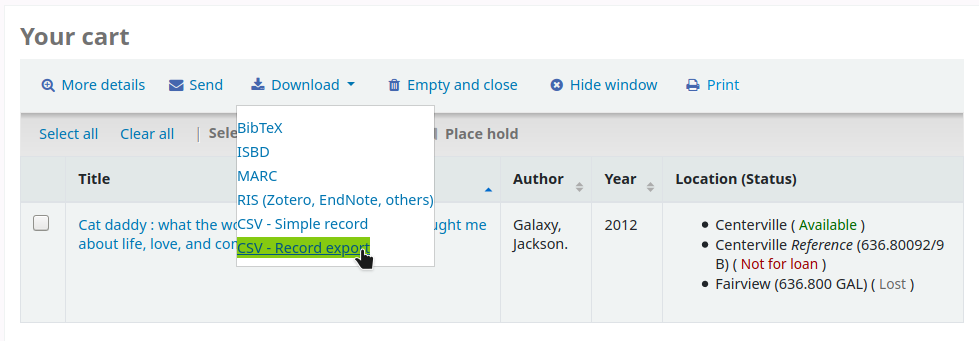
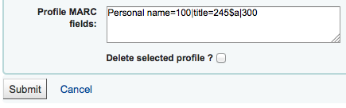
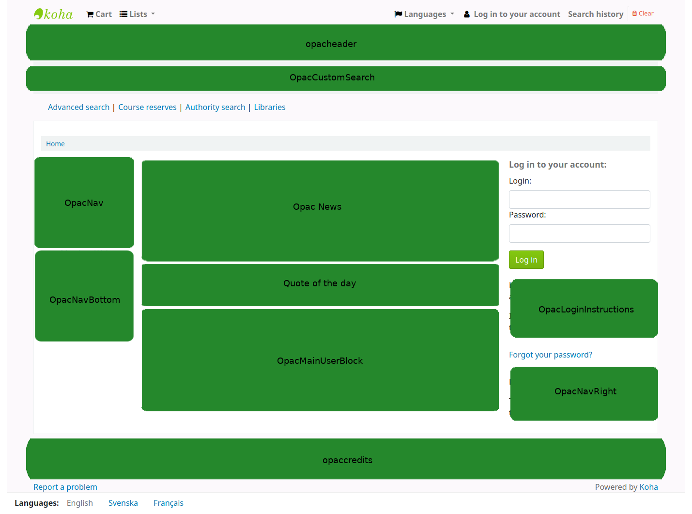
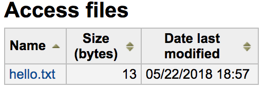

工具
Koha 的工具都是執行特定工作之用。其他的圖書館管理系統常把這些工具當作 ‘報表’。
在这里： 更多 > 工具
读者和流通
读者清单
在这里： 更多 > 工具 > 读者与流通 > 读者清单
读者清单是存储读者群的地方，可以通过 批次读者修改工具 或报表修改读者。
點選 ‘新增讀者清單’ 鈕，就能新增讀者清單
輸入虛擬書架名稱。
勾選 ‘共享’ 盒後，此選單可以被使用 manage_patron_lists permission 的讀者看到。
儲存虛擬書架。
每個清單都有 ‘作用’ 鈕以開啟更多選項。
按 ‘作用’ 選單裡的 ‘新增讀者’ 鈕，就能新增讀者入選單。

請在搜尋框輸入讀者名字或讀者證號並在右側空白處點擊以加入讀者資訊。
此外，也可以按 ‘鍵入多個讀者證號碼’ 連結，並把條碼掃瞄 (或鍵入) 盒內。
所有的讀者都選定後，按 ‘新增讀者’ 鈕把他們加入清單。
說明
您可以在管理模組的 ‘欄組態’ 部分, 自訂義此表的列(table id: patron-list-table)。
讀者讀書會
到那裡： 更多 > 工具 > 讀者與流通 > 讀者讀書會
讀者讀書會新增供讀者加入的讀書會。可做為追蹤讀書會、圖書俱樂部及其他俱樂部活動。
重要
Staff will need the clubs permissions to edit clubs, templates and enroll patrons. To learn how to set patron permissions, go to the patron permissions section of this manual.
新增讀書會模板
按 ‘新增讀書會模板’ 鈕。新增的欄位可於新增模板時填入資料，或新增讀書會時加入為會員。

名稱為必備。例如，’成人讀書俱樂部’、’兒讀讀書俱樂部’ 或 ‘夏季閱讀計晝’。新增俱樂部時將開啟這些模板。
可加入其他資訊。
允許公開註冊：勾選之後所有讀者都可經由 OPAC 的模板加入俱樂部。
有效的電子郵件信箱為必備：勾選之後必須留下有效電子郵件信箱的讀者才能註冊。因此必須先行註冊電子信箱。
從下拉式圖書館裡選取分館的讀者註冊。若空白，則所有的分館讀者均可註冊。
讀書會欄位：依此模板新增讀書會時，可以使用該等欄位。例如，可以是讀書會的名稱、發起人姓名、主題等。
‘名稱’ 是欄位的標籤
‘說明’ 是此欄位的其他資訊。
可把容許值連結至此。
註冊欄位：在此模版註冊讀書會時，您可新增供讀者填寫的欄位。

‘名稱’ 是欄位的標籤
‘說明’ 是此欄位的其他資訊。
可把容許值連結至此。
依此模版新增讀書會
勾選 ‘新增讀書會’ 下拉選單並選定使用的模板。以該模板填入新讀書會的資料。

名稱為必備，使用模板將此名稱列為讀書會的名稱。例如，’夏季兒童讀書會’。
可加入其他資訊。
讀書會應有開始與束的時間。到期後，不能再註冊該讀書會。
從下拉式圖書館裡選取分館的讀者註冊。若空白，則所有的分館讀者均可註冊。
Enrolling a patron in a club from the staff interface
以館員的帳號，從館員介面註冊讀書會的讀者。
在 ‘詳情’ 頁面或 ‘借出’ 頁面，點選 ‘讀書會’ 分頁。當前的讀書會將顯現在此分頁。

按下 ‘註冊’ 鈕並在欄位內填入資料。
按取消註冊鈕就能取消註冊。
從 OPAC 註冊至讀書會
若同意公開註冊，讀書會將顯示在 OPAC。
讀者必須登入其帳號。在 ‘您的摘要’ 區塊，點選 ‘讀書會Clubs’ 分頁並註冊。

檢視註冊
進入 ‘讀者讀書會’ 工具頁並從 ‘行動’ 鈕選擇註冊。

為讀者群組預留
您可以為讀者群組預留 - 以隨機順序為群組成員預留.
預留給讀者群組:
前往讀者讀書會工具 (‘首頁 > 工具 > 讀者讀書會’).
點擊群組的’動作’按鈕以及選擇’搜尋館藏’.
搜尋題名以及選擇記錄.
從紀錄的操作連結選擇’預留[群組名稱]’, 或是從功能表列裡’預留’動作.
預留頁面顯示和列出群組成員.
點擊’預留’按鈕.
結果: 預留給所有的群組成員.
匯入讀者
到那裡： 更多 > 工具 > 讀者與流通 > 匯入讀者
任何時間都可以使用讀者匯入工具批次新增讀者。通常用於各級學校新生入學時。
新增讀者匯入檔
您可從讀者匯入工具的啟始頁使用匯入的模板，下載含標頭的空白 CSV 檔案。標頭包括讀者匯入工具的所有欄位。您可以刪除不需要的欄位和列，少數必填欄位和列除外。 覆蓋時，如果您的新 .csv 包含空白列，則讀者記錄中的任何現有值都將被空白覆蓋。 最好刪除 .csv 中的所有空白列，以確保沒有刪除現有數據。
重要
cardnumber, surname, and all fields you have defined in the BorrowerMandatoryField preference are required and must match valid entries in your database.
重要
此 ‘password’ 欄的值必須是純文字，將以 MD5 雜湊演算法編碼。
若密碼已經編碼，請洽系統管理員，詢求其他選項
重要
Date formats should match your dateformat system preference, and must be zero-padded, e.g. ‘01/02/2008’. Alternatively you can supply dates in ISO format (e.g. ‘2008-12-01’).
重要
含有特殊字元或語音符號，請使用 UTF-8 編碼。否則，該等字元或符號不會被正確地匯入。
說明
若載入 讀者屬性，’patron_attributes’ 欄位應包括以逗點區隔的屬性類型及其值。
每個值之前應有屬性類型與冒號。
例如：”INSTID:12345,BASEBALL:Cubs”
若設定多個值則此欄位必須折收起來。
因為可能包括空格，所以必須置於雙括號內：
“INSTID:12345,BASEBALL:Cubs,””BASEBALL:White Sox””
說明
可以對讀者匯入工具設限。若到期日與評論符合既有的限制，在匯入檔案內符合該限制的讀者將被排除在外。所以，一個讀者可以重複匯入，但祗收錄一位。祗要新增限制，就能阻止其他的重複。
匯入讀者
新增檔案後，可以使用匯入讀者工具把資料加入Koha。
選定 CSV 檔案

指定對映 ‘cardnumber’ 或 ‘username’ 以避免新增重複的讀者號。使用其他的讀者屬性可以增加對映點。

接著選擇適用於匯入讀者的預設值
如：匯入指定分館的讀者時，可在匯入表單將分館代碼欄位給那些匯入的讀者。
最後，若有重複時，需決定以何種資料取代它。
匹配紀錄是以欄位找到的，避免出現重複紀錄

安裝時已用到的讀者屬性，就能夠在匯入時選用它。可以覆寫所有讀者屬性或取代匯入檔內的讀者屬性。讓其他屬性保持原樣不變。
通知 & 收條
到那裡： 更多 > 工具 > 讀者與流通 > 通知 & 收條
Koha 產生的通知與流通收據 (或收條) 都可以用通知&收條工具客製它。系統本身有若干預設的模版在工具頁面裡。

說明
您可以在管理模組的 ‘欄組態’ 部份, 自定義此表的列 (table id: lettert).
每個通知都可編輯，為了避免系統錯誤，祗有少數才能被刪除。每個通知與收條都可以編輯供各圖書館使用，預設是給所有圖書館使用。
If you have a style you’d like applied to all slips you can point the SlipCSS preference to a stylesheet. The same is true for notices, using the NoticeCSS preference to define a stylesheet.
格式化此通知也需檢視 客製化通知與收條 共筆頁面。
新增通知與收條
新增通知或收條
勾選 ‘新增通知’

選擇此通知或收條適用的圖書館
重要
並非所有通知都可以依館別區分，詳情見 客製化通知與收條 共筆頁頁。
選擇此通知相關的模組
代碼限制20字元內
以同樣的欄位擴允您的代碼
說明
使用逾期通知時，確認分館名稱出現其中以及設定 triggers 之內。
接著您可客製化各種可能發送方式的通知
每種通知都應有專屬的電子郵件模板
If you’re using the TalkingTechItivaPhoneNotification service you can set up a Phone notification

列印此通知時，可以設定列印模板

If you have enabled SMS notices with the SMSSendDriver preference you can set the text for your SMS notices next

每個通知都有相同的選項
若計畫以 HTML 格式撰寫通知或收條，勾選 ‘HTML訊息’ 盒，否則其內容將視為純文字
合併主題將顯示在電子郵件主題列
可在訊息本體使用任何文字，使用左手邊的欄位鍵入來自資料庫的個人化資料。
說明
詳情見 客製化通知與收條 共筆頁面。
重要
逾期通知本身可使用 <<items.content>> 標籤，或使用 <item></item> 展開所有的標籤。詳情見 標記逾期通知
確認使用 <<items.content>> 於逾期通知裡，列出所有逾期的館藏資料。
另個祗適用於另個逾期通知的選項是，使用 <item></item> 標籤展開它以印出多列。給 <item></item> 標籤選項的範例是：
<item>”<<biblio.title>>” 著者 <<biblio.author>>, <<items.itemcallnumber>>, 條碼：<<items.barcode>>, 借出日期：<<issues.issuedate>>, 到期日：<<issues.date_due>> 罰款：<<items.fine>> </item>
重要
祗有逾期通知才能使用 <item></item> 標籤，其他的通知使用 <<items.content>>
說明
可使用 <<today>> 語法新增今天的日期
說明
可在其他姓名或縮寫欄位鍵入讀者全名就能在收條或通知內顯示其全名。
The system preference TranslateNotices will add tabs for each installed language to the notices editor. The notice defined in the ‘Default’ tab will be used if there is no preferred language set for a patron.

檢視通知模板
有的時候，仍需要檢視通知模板，以確認對指定讀者特定館藏或紀錄發送的通知。
檢視通知模板時，可看到模板標題的鍵入資料的欄位
填入必要的資訊，按下方的檢視鈕。檢視對話將顯示任何問題。
標記逾期通知
新增逾期通知時，在資料庫欄位外還可以加入兩個標籤。詳情見 客製化通知與收條 共筆頁面。
重要
這些新標籤祗適用於逾期通知，不能用在其他的流通通知。
<item> 與 </item> 應包括來自書目與館藏表的所有欄位。
可使用通知模版裡這些欄號裡的範例：
The following item(s) is/are currently overdue:
<item>"<<biblio.title>>" by <<biblio.author>>, <<items.itemcallnumber>>, Barcode: <<items.barcode>> Fine: <<items.fine>></item>
假設兩筆館藏逾期，通知內容會是這樣：
The following item(s) is/are currently overdue:
"A Short History of Western Civilization" by Harrison, John B, 909.09821 H2451, Barcode: 08030003 Fine: 3.50
"History of Western Civilization" by Hayes, Carlton Joseph Huntley, 909.09821 H3261 v.1, Barcode: 08030004 Fine: 3.50
既有說明與收條
Among the default notices are notices for several common actions within Koha. All of these notices can be customized by altering their text via the Notices and slips tool and their style using the NoticeCSS system preference to define a stylesheet.
小技巧
Review the Customising notices and slips wiki page for information on formatting item information in these notices.
Here are some of what those notices do:
2FA_DISABLE
This notice is sent to a staff user when they disable the two-factor authentication on their account.
2FA_ENABLE
This notice is sent to a staff user when they enable the two-factor authentication on their account.
2FA_OTP_TOKEN
This notice is used to send a time-based one-time password to a staff user for them to use to log into the staff interface if they have enabled the two-factor authentication on their account.
已接受
This notice is sent to the patron when their purchase suggestion is accepted.
备注
If you don’t want to send this notice, simply delete it.
ACCOUNT_PAYMENT
This notice is sent for each payment transaction in a patron’s account if the UseEmailReceipts system preference is set to ‘Send’.
ACCOUNT_WRITEOFF
This notice is sent for each writeoff transaction in a patron’s account if the UseEmailReceipts system preference is set to ‘Send’.
ACQCLAIM (採訪催缺)
Used for claiming orders in the aquisitions module.
ACQCLAIM is the code of the sample notice, but it’s possible to define several notices choosing any code. Only the module ‘Claim acquisition’ will be taken into account. All notices with this module will appear in the pull down on the late orders page.
在若干情況下，使用此通知：
館員以有效電子郵件地址發送電子郵件。
The vendor contact marked as ‘Contact about late orders?’ has a valid email address.
ACQORDER (採訪訂單)
Used in the acquisitions module to send order information to the vendor
The notice is triggered manually from the basket summary page using the ‘Email order’ button in the toolbar.
在若干情況下，使用此通知：
館員以有效電子郵件地址發送電子郵件。
The vendor contact marked as ‘Primary acquisitions contact’ and ‘Contact when ordering’ has a valid email address.
ACQ_NOTIF_ON_RECEIV
Used in the acquisition module to inform patrons on receiving orders they have been added to.
AR_CANCELLED
This notice is sent to the patron when an article request is cancelled by staff.
AR_COMPLETED
This notice is sent to the patron when an article request is marked as completed by staff.
AR_PENDING
This notice is sent to the patron when an article request is changed to ‘pending’ status
AR_PROCESSING
This notice is sent to the patron when an article request is marked as being processed by staff.
AR_REQUESTED
This notice is sent to the patron when an article request has been made in order to confirm the request.
AUTO_RENEWALS
這則通知將會寄送給讀者如果自動續借已被啟用，而讀者選擇接收訊息在他們的 訊息偏好.
In order to send this notice, you must set the AutoRenewalNotices system preference to “according to patron messaging preferences”.
這則通知已設定，所以根據續借的結果，無論成功與否，訊息會有所不同。
AUTO_RENEWALS_DGST
這則通知將會寄送讀者，如果自動續借已啟用，並且讀者在他們的訊息偏好選擇 messaging preferences.
In order to send this notice, you must set the AutoRenewalNotices system preference to “according to patron messaging preferences”.
這則通知已設定，所以根據續借的結果，無論成功與否，訊息會有所不同。
AVAILABLE
This notice is sent to the patron who made a purchase suggestion, when the order created from the suggestion is received.
备注
If you don’t want to send this notice, simply delete it.
CART
This notice is used when sending the cart by email from the OPAC or when sending the cart by email from the staff interface.
CANCEL_HOLD_ON_LOST
This notice is sent to a patron who placed a hold on an item and staff marked this items as lost from the ‘Holds to pull’ list.
This notice is sent if the CanMarkHoldsToPullAsLost system preference is set to ‘Allow to mark items as lost and notify the patron’.
CHECKIN
還入館藏時發送此 ‘還入’ 通知
碰到以下兩種情況時使用此通知：
The EnhancedMessagingPreferences is set to ‘Allow’
讀者請求收到此通知
If EnhancedMessagingPreferencesOPAC is set to ‘Show’, patrons will be able to choose their messaging preferences in their online account in the Messaging tab.
Staff can select this notice for a patron in their messaging preferences.
CHECKOUT
借出館藏時發送此 ‘借出’ 通知
碰到以下兩種情況時使用此通知：
The EnhancedMessagingPreferences is set to ‘Allow’
讀者請求收到此通知
If EnhancedMessagingPreferencesOPAC is set to ‘Show’, patrons will be able to choose their messaging preferences in their online account in the Messaging tab.
Staff can select this notice for a patron in their messaging preferences.
CHECKOUT_NOTE
This notice is sent to the system administration (the email address in KohaAdminEmailAddress) to alert them that a patron added a checkout note from their checkouts list on the OPAC.
DISCHARGE
此通知用於製作 PDF，表示離館請求已完成
此 PDF 可以被讀者從其帳號下載，或讀者請求離館時，由館員介面下載
The discharge feature is controlled by the useDischarge system preference.
DUE
This notice is sent as the ‘Item due’ notice for an checked out item that is due today.
碰到以下兩種情況時使用此通知：
The EnhancedMessagingPreferences is set to ‘Allow’
讀者請求收到此通知
If EnhancedMessagingPreferencesOPAC is set to ‘Show’, patrons will be able to choose their messaging preferences in their online account in the Messaging tab.
Staff can select this notice for a patron in their messaging preferences.
DUEDGST
This notice is sent as the ‘Item due’ notice for all checked out items that are due today (digest option).
碰到以下兩種情況時使用此通知：
The EnhancedMessagingPreferences is set to ‘Allow’
讀者要求以摘要方式收取此通知
If EnhancedMessagingPreferencesOPAC is set to ‘Show’, patrons will be able to choose their messaging preferences in their online account in the Messaging tab.
Staff can select this notice for a patron in their messaging preferences.
HOLD (預約到館待提取)
This notice is sent to the patron when their hold is ready for pickup.
碰到以下兩種情況時使用此通知：
The EnhancedMessagingPreferences is set to ‘Allow’
讀者要求以摘要方式收取此通知
If EnhancedMessagingPreferencesOPAC is set to ‘Show’, patrons will be able to choose their messaging preferences in their online account in the Messaging tab.
Staff can select this notice for a patron in their messaging preferences.
當此通知指向分館表單時，係指提取分館的資訊。
HOLD_CHANGED
This notice is sent to library staff (either the email address in ExpireReservesAutoFillEmail), or the library’s reply-to address, to alert them that a hold has been canceled, the item filled the next hold and is now waiting for another patron.
This notice is only sent if ExpireReservesAutoFill is set to ‘Do’.
HOLD_REMINDER
This notice is sent to the patron when their hold has been waiting for pickup for more than a number of days
If EnhancedMessagingPreferencesOPAC is set to ‘Show’, patrons will be able to choose their messaging preferences in their online account in the Messaging tab. The notice is ‘Hold reminder’.
Staff can select this notice for a patron in their messaging preferences. The notice is ‘Hold reminder’.
The holds_reminder.pl cron job is required to generate this notice.
HOLDPLACED
This notice is sent to the library staff when a hold has been placed.
This notice requires the emailLibrarianWhenHoldIsPlaced system preference to be set to ‘Enable’.
When this notice references the branches table it is referring to the pickup library information.
ILL_PARTNER_REQ
This notice is used by the ILL module to send requests to partner libraries.
ILL_PICKUP_READY
This notice is sent to the patron when the inter-library loan they requested has been fulfilled and is now ready for pickup.
Staff can select this notice for a patron in their messaging preferences. The notice is ‘Interlibrary loan ready’.
备注
The option will only appear in the messaging preferences if the ILLModule system preference is enabled.
If EnhancedMessagingPreferencesOPAC is set to ‘Show’, patrons will be able to choose their messaging preferences in their online account in the Messaging tab. The notice is ‘Interlibrary loan ready’.
备注
The option will only appear in the messaging preferences if the ILLModule system preference is enabled.
ILL_REQUEST_CANCEL
This notice is sent to library staff when a patron cancels their inter-library loan request from their account in the OPAC.
ILL_REQUEST_MODIFIED
This notice is sent to library staff when a patron modifies their inter-library loan request from their account in the OPAC.
ILL_REQUEST_UNAVAIL
This notice is sent to the patron when the inter-library loan they requested has been cancelled because it was unavailable.
Staff can select this notice for a patron in their messaging preferences. The notice is ‘Interlibrary loan unavailable’.
备注
The option will only appear in the messaging preferences if the ILLModule system preference is enabled.
If EnhancedMessagingPreferencesOPAC is set to ‘Show’, patrons will be able to choose their messaging preferences in their online account in the Messaging tab. The notice is ‘Interlibrary loan unavailable’.
备注
The option will only appear in the messaging preferences if the ILLModule system preference is enabled.
ILL_REQUEST_UPDATE
This notice is sent to the patron to alert them that their inter-library loan request has been updated.
Staff can select this notice for a patron in their messaging preferences. The notice is ‘Interlibrary loan updated’.
备注
The option will only appear in the messaging preferences if the ILLModule system preference is enabled.
If EnhancedMessagingPreferencesOPAC is set to ‘Show’, patrons will be able to choose their messaging preferences in their online account in the Messaging tab. The notice is ‘Interlibrary loan updated’.
备注
The option will only appear in the messaging preferences if the ILLModule system preference is enabled.
LIST
This notice is used when sending a list by email from the OPAC or when sending a list by email from the staff interface.
MEMBERSHIP_EXPIRY
此通知告訴讀者其讀者證即將到期。
Requires that you have the MembershipExpiryDaysNotice set and the related cron job set.
NEW_CURBSIDE_PICKUP
This notice is sent to the patron when a curbside pickup is scheduled.
In order to send this notice,
The patron must have chosen to receive the ‘Hold filled’ notice by email.
Staff can select this notice for a patron in their messaging preferences
If EnhancedMessagingPreferencesOPAC is set to ‘Show’, patrons will be able to choose their messaging preferences in their online account in the Messaging tab.
NEW_SUGGESTION
This notice is sent to library staff when the EmailPurchaseSuggestions system preference is enabled.
NOTIFY_MANAGER
當館員在採訪模組中 被指派為建議的管理員 這則通知將會發送給他們。
ODUE (逾期通知)
此通知係發送逾期通知之用
ODUE 是範本通知的代碼，但也可用於任何代碼設定多個不同的訊息，供不同讀者類型及通知層次使用
要求設定 啟動逾期通知/狀態
OPAC_REG
This notice is sent to library staff when the EmailPatronRegistrations system preference is enabled and a patron registers through the OPAC.
OPAC_REG_VERIFY
This notice is sent to the patron who registered through the OPAC if the PatronSelfRegistrationVerifyByEmail system preference is enabled.
ORDERED
This notice is sent to the patron who made a suggestion, when the ‘from a suggestion’ option is used to create an order from it.
备注
If you don’t want to send this notice, just delete it.
PASSWORD_CHANGE
This notice is sent to a patron whose password was changed, if the NotifyPasswordChange system preference is enabled.
PASSWORD_RESET
This notice is sent when a patron requests a new password from the OPAC in order to validate the email address.
The password reset feature is controlled by the OpacResetPassword system preference.
PICKUP_RECALLED_ITEM
This notice is sent to the patron who has requested a recall when the item is ready for them to pick up.
PREDUE
This notice is sent as the ‘Advanced notice’ when an item is due
碰到以下兩種情況時使用此通知：
The EnhancedMessagingPreferences is set to ‘Allow’
讀者請求收到此通知
If EnhancedMessagingPreferencesOPAC is set to ‘Show’, patrons will be able to choose their messaging preferences in their online account in the Messaging tab.
Staff can select this notice for a patron in their messaging preferences.
PREDUEDGST
This notice is sent as the ‘Advanced notice’ digest for all items that are due
碰到以下兩種情況時使用此通知：
The EnhancedMessagingPreferences is set to ‘Allow’
讀者要求以摘要方式收取此通知
If EnhancedMessagingPreferencesOPAC is set to ‘Show’, patrons will be able to choose their messaging preferences in their online account in the Messaging tab.
Staff can select this notice for a patron in their messaging preferences.
PROBLEM_REPORT
This notice is sent to the email address in the KohaAdminEmailAddress system preference, or the library’s email address when a patron reports a problem on the OPAC.
RECEIPT
Used to send a payment receipt by email from the point of sale module.
已拒絕
This notice is sent when a patron’s purchase suggestion is rejected.
备注
If you don’t want to send this notice, just delete it.
RENEWAL
This notice is sent as the ‘Item checkout and renewal’ notice for all items that are renewed
滿足三種情況時使用此通知：
The EnhancedMessagingPreferences is set to ‘Allow’
The RenewalSendNotice system preference is set to ‘Send’
讀者請求收到此通知
If EnhancedMessagingPreferencesOPAC is set to ‘Show’, patrons will be able to choose their messaging preferences in their online account in the Messaging tab.
Staff can select this notice for a patron in their messaging preferences.
RETURN_RECALLED_ITEM
This notice is sent to the patron who currently has an item in their possession that has been recalled. It serves to notify them of the new due date for the checked out item.
SERIAL_ALERT (新期刊)
此通知用於期刊模組，告知讀者/館員新期刊到了。SERIAL_ALERT (舊版用 RLIST) 提供範例通知，但通知代碼可以任選。可以管理多個通知。
You have the option to select the notice used to inform the patron about a received serial issue when adding or editing a subscription. Choose from the ‘Patron notification’ drop down menu.
If a notice has been selected for a subscription, patrons can subscribe to the email notification from the subscription tab in the detail view in the OPAC.
备注
Notice also that if you’d like to notify patrons of new serial issues, you can click on ‘define a notice’ which will take you to the ‘Notices’ tool.
SHARE_ACCEPT
通知讀者，其他讀者接受共享虛擬書架。
Requires that the OpacAllowSharingPrivateLists system preference be set to ‘Allow’.
See Managing lists for more information about sharing lists.
SHARE_INVITE
通知讀者，其他讀者想要共享其虛擬書架。
Requires that the OpacAllowSharingPrivateLists system preference be set to ‘Allow’.
See Managing lists for more information about sharing lists.
SR_SLIP
Used to notify library staff from a particular library branch of items that should be transferred to another library in the context of stock rotation.
Requires the stockrotation.pl cron job.
STAFF_PASSWORD_RESET
This notice is sent when a staff member sends a password reset email to a patron.
The password reset feature is controlled by the OpacResetPassword system preference.
TICKET_ACKNOWLEDGE
This notice is sent to the reporter of a catalog concern when they report a concern through the staff interface, or when they report a concern through the OPAC, to acknowledge that the concern report was received.
The concern report feature is enabled in the staff interface by the CatalogConcerns system preference and in the OPAC by the OpacCatalogConcerns system preference.
TICKET_NOTIFY
This notice is sent to the cataloging team, to the email address in the CatalogerEmails system preference, to notify them that a concern was reported about a bibliographic record.
The concern report feature is enabled in the staff interface by the CatalogConcerns system preference and in the OPAC by the OpacCatalogConcerns system preference.
TICKET_RESOLVE
This notice is sent to the reporter of a catalog concern when the concern is marked as resolved with the ‘Notify’ flag.
The concern report feature is enabled in the staff interface by the CatalogConcerns system preference and in the OPAC by the OpacCatalogConcerns system preference.
TICKET_UPDATE
This notice is sent to the reporter of a catalog concern when the concern is updated with the ‘Notify’ flag.
The concern report feature is enabled in the staff interface by the CatalogConcerns system preference and in the OPAC by the OpacCatalogConcerns system preference.
TO_PROCESS
告知館員採訪建議是否移入基金
需要 notice_unprocessed_suggestions 工作排程
WELCOME
Sent to patrons when their account is set up if the AutoEmailNewUser preference is set to ‘Send’
备注
For security reasons, it is not possible to send the patron’s password in a notice.
There are also a set of predefined slips (or receipts) listed on this page. All of these slips can be customized by altering their text via the Notices & slips tool and their style using the SlipCSS preference to define a stylesheet. Here is what those slips are used for:
ACCOUNT_CREDIT
Used to print a receipt for a credit (either a payment, writeoff or other credit).
The slip or receipt can be printed manually with the ‘Print’ button next to a credit type account line in the patron’s accounting tab.
The slip or receipt can also be printed semi-automatically when paying or writing off a charge if the FinePaymentAutoPopup system preference is enabled.
备注
It is possible to set specific notices for different credit types. To do so, create a new notice with the code CREDIT_ followed by the credit type code.
For example, to have a specific slip for writeoffs, create a new notice with the code CREDIT_WRITEOFF.
ACCOUNT_DEBIT
Used to print an invoice for a debit (any type of charge, such as a lost item fee, or overdue fine).
The slip or invoice can be printed manually with the ‘Print’ button next to a debit type account line in the patron’s accounting tab.
备注
It is possible to set specific notices for different debit types. To do so, create a new notice with the code DEBIT_ followed by the debit type code.
For example, to have a specific slip for lost items, create a new notice with the code DEBIT_LOST.
ACCOUNTS_SUMMARY
Used to print a summary of outstanding charges and unused credits in the patron’s account.
The slip can be printed manually with the ‘Print account balance’ option in the ‘Print’ button at the top of the patron’s details page.
AR_SLIP
Used to print a slip for an article request
The slip or receipt can be printed manually when managing article requests from the staff interface.
到那裡： 流通 > 請求論文 > 啟用 > 列印收條
CHECKINSLIP
ISSUEQSLIP
快速收條祗包括今天借出的館藏
ISSUESLIP
Used to print a full slip in circulation
收條顯示今天借出與尚未還入的館藏
HOLD_SLIP
使用於列印預約收條
The holds slip is generated when a hold is confirmed and set to waiting.
OVERDUE_SLIP
使用於列印逾期收條
The overdues slip can be generated manually using the ‘print’ menu in the patron account in the staff interface. It will show all items overdue.
RECALL_REQUESTER_DET
Used to print the details of the patron who has requested a recall on an item, when receiving the recall.
RECEIPT
Used to print a payment receipt in the point of sale module.
TRANSFERSLIP
使用於列印快速收條
確認轉移後，列印轉移收條，隨書轉移至另個圖書館
This tool also allows you to modify database entries for some specific purposes. So far, only the overdue fine description is available.
OVERDUE_FINE_DESC
This template is used to generate the description for overdue fines in a patron’s account.
备注
The information available to this customization come from the checkouts (issues), items and patrons (borrowers).
啟動逾期通知/狀態
到那裡： 更多 > 工具 > 讀者與流通 > 啟動逾期通知/狀態
必須先使用 通知與收條 工具設定逾期通知，才能啟動發出逾期訊息。
重要
設定需要逾期通知的 讀者類型，才能發送逾期通知給讀者。
重要
Depending on the value of your OverdueNoticeCalendar preference the delay may or may not include days the library is closed based on the holiday calendar.
逾期通知/啟動狀態工具讓館員有權限，送出最多三次通知給逾期館藏的讀者

延遲日數是應該到期卻逾期後啟動通知的日數。
重要
必須設定延遲日數，才能要求 Koha 啟動此作業 (送出信件或限制借閱權利)。
勾選分頁的 ‘第二’ 與 ‘第三’ 通知，送出更多的通知
勾選 ‘限制’ 盒，把通知置於讀者紀錄裡，在借出時，告知館員，該讀者還有逾期館藏，不得借出；如此一來，就達到禁止讀者借出館藏的目的。
If you choose to restrict a patron in this way you can also have Koha automatically remove that restriction with the AutoRemoveOverduesRestrictions preference.
Next you can choose the delivery method for the overdue notice. You can choose from Email, Phone (if you are using the i-tiva Talking Tech service), Print and SMS (if you have set your SMSSendDriver).
新增讀者證
到那裡： 更多 > 工具 > 新增讀者證
可以在新增讀者證使用列印用的客製化布局與模板。以下是若干新增讀者證模組的功能：
從 Koha 讀者資料取得客製化讀者證布局的文字內容
設計讀者證面板供列印之用(符合書標格式)
建立與管理供批次列印的讀者證
匯出 (PDF 格式) 一件或多件批次列印資料
匯出 (PDF 格式) 一個批次的一件或多件讀者證
布局
到那裡： 更多 > 工具 > 新增讀者證 > 管理 > 布局
布局定義印在讀者證的文字與照片位置。
說明
讀者證可使用最多三列文字的條碼，以及最多兩張照片。
新增布局
若還沒有設定布局，可按螢幕上方的 ‘新增’ 鈕並選擇 ‘布局’，就能新增它。

可按左方的 ‘管理布局’。出垷可供編輯的布局清單。但每頁上方仍有 ‘新增布局’ 鈕。

指定給布局的名稱係供您未來容易辨識使用
以下拉選單使用的單位設定在布局內使用的度量的單位。

說明
Postscript Point 是 1/72” Adobe Agate 是 1/64”，一英吋是 25.4 SI 公釐
接著，說明布局為讀者證的正面或背面
說明
使用 2 面讀者證時需設定正反面的布局，此選項不允許列印雙面讀者證，祗能用於追蹤設計的讀者證。
讀者證最多有 3 列文字。可以是固定的文字或從讀者紀錄提取的欄位內容。把欄位名稱置於方括號內，就能提取欄位的內容 - <firstname>
說明
可從資料庫概要 http://schema.koha-community.org 取得檔案名稱的清單
對每列文字，您需選定字型、大小與讀者證上文字的位置
勾選 ‘列印讀者證號碼當成條碼’ 顯示條碼與讀者證號碼。把讀者證號碼轉換為條碼。還可勾選 ‘將讀者證號碼以文字方式列印在條碼之下’ 讓條碼可以被肉眼閱讀。
最後，可選擇兩張以內的照片印在讀者證上。
重要
設計者需負責文字、條碼與照片以免重複。
儲存之後，您的布局將出現在 ‘管理布局’ 頁面。

模板
到那裡： 更多 > 工具 > 新增讀者證 > 管理 > 讀者證模板
布局的作用是在書標/讀者證排列標籤。可能是 Avery 5160 地址機、Gaylord 47-284 書標機或 28371 讀者證製作機等。布局所需的資訊可能在包裝上，或者從代理商的網站或範例取得。
新增模版
按頁面上方的 ‘新增模版’ 就立即進入編輯模版頁面。可按左方的 ‘管理模版’ 鈕。從可得的模版中選取編輯的模版。不過在頁面上方仍有 ‘新增模版’ 鈕。
按了 ‘編輯’ 或 ‘新增布局’ 後就可以在標籤或讀者證上設定布局。

模版代碼是系統產生的代碼
模版代碼應足以在代碼清單中代表該模版
您可用模板說明新增模板的資訊
以下拉選單使用的單位設定在布局內使用的度量的單位。
說明
Postscript Point 是 1/72” Adobe Agate 是 1/64”，一英吋是 25.4 SI 公釐
度量 (頁高、頁廣、卡片廣、卡片高) 可從包裝取得，也可從代理商網站或樣張量取。
設定檔是一組適用於指定模版的 “調整”，於列印之前補償特定印表機的偏移 (指定給該印表機)。
挑選列印的設定檔前先試印幾張讀者證就能看出印表機/模版組合的可行性。
從印表機文件找到偏移值後，新增設定檔 並指定給模板。
重要
必要時才建置設定檔，不要隨意設定印表機設定檔。不可能移除模版內移除設定檔但可以切換至另個設定檔。
說明
使用不同的印表機則應設定多個模版。
儲存之後，您的布局將出現在 ‘管理布局’ 頁面。

設定檔
到那裡： 更多 > 工具 > 新增讀者證 > 管理 > 設定檔
設定檔是一組適用於指定 模版 的 “調整” 於列印之前補償特定印表機的偏移。設定模版後並列印樣本資料若發現館藏並未出現在預期的位置，對該印表機給個設定檔 (或同個印表機的不同紙匣)，指示上、下、左、右的位移值。
印出的讀者證與預期相同，就不需要設定檔。
新增設定檔
勾選頁面上方的 ‘設定檔’ 鈕，選取 ‘新增設定檔’，就能新增設定檔
按頁面上方的 ‘新增設定檔’ 鈕，就能新增設定檔。以表單方式設定借書證偏移的部份。可從左方的 ‘管理設定檔’ 選定欲編輯的設定檔。

印表機名稱與紙匣不符合現況，這是供您的設定檔使用。
說明
例如：可在印表機名稱內使用印表機型號，或者稱他為 ‘我的桌面印表機’
在 編輯模板表單 選定設定檔後即把內容加入該模板內
單位下拉選單用在您的設定檔內，用以設定衡量的單位。
說明
Postscript Point 是 1/72” Adobe Agate 是 1/64”，一英吋是 25.4 SI 公釐
整個圖像水平或垂宜偏離中心就該處理位移。小心描述該偏離的狀況
對偏移值而言，負數表示向上與向左移動內容而正數表示向下與向右
範例：距離第一個標籤左緣 0 .25”，距離第二個標籤左緣 0 .28” 且距離第三個標籤左緣 0 .31”。表示水平偏移應設為 (減) -0.03 ” 以補償其差距。
儲存之後，設定檔將出現在 ‘管理印表機設定檔’ 頁面。

儲存新的設定檔後，可回到模板清單並選擇編輯該模板。
批次
到那裡： 更多 > 工具 > 新增讀者證 > 管理 > 批次讀者證
批次是一群讀者，您可批次製作讀者證。
新增批次
按頁面上方的 ‘新增批次’，就能新增批次了。選擇左方的 ‘管理批次’ 就可從選單中選取批次。您可從這裡選取待編輯的批次或新增批次。

彈出新的批次訊息並指引您選擇被發送的讀者。

選定 ‘新增館藏’ 鈕後彈出讀者搜尋視窗。

從這裡搜尋讀者姓名、類型或所屬圖書館就能把讀者加入批次內。以萬用字元 * 搜尋所有的讀者。

按 ‘新增’ 鈕就能新增讀者至批次。從結果新增讀者後可執行另個搜尋重新來過或按螢幕下方的 ‘關閉’ 鈕表示做完了。然後出現此批次。
 If you are satisfied with your batch you can proceed to export. If you want to correct or even delete that batch the buttons to do so can be found at the top of your screen. You can always come back here through the ‘Manage > Card batches’ button.
可以按 ‘批次匯出讀者證’ 或勾選讀者名字右方的盒，再按上方的 ‘匯出讀者證’ 鈕，匯出勾選的讀者。
匯出選單請您指定模板、布局與開始位置 (在報表紙開始列印的位置)。
說明
若前 6 個書標已使用則可從第 7 個位置開始列印。書標的位置編碼係由左而右由上而下。

按下 ‘匯出’ 鈕後出現列印書標的 PDF 檔案

開啟 PDF 檔案後可看到待列印的讀者證

以上的圖像是兩行文字式的布局。第一行是純文字，第二行是兩個欄位的內容 <firstname> <surname>。可以列印讀者照片 (若提供的話) 與 39 碼式的讀者號。以三欄 8 列的模板在位置 1-3 列印。列印時不會重組 PDF (即不會自動符合紙張大小) 印表機可能無法在模板上正確印出。
管理照片
到那裡： 更多 > 工具 > 新增讀者證 > 管理 > 照片
Images uploaded using this tool will appear on the menu when creating patron card layouts. You are limited in how many images you can upload (not counting patron images) by the ImageLimit system preference.
重要
照片必須小於500K。
說明
以此工具上傳的照片不得少於300dpi，這是列印的最低品質。
在螢幕中央是一個簡單的上傳表單，瀏覽電腦的檔案，選定後給個容易辨識的名稱。

檔案上傳後，出現確認訊息。

照片與其他資料將顯示在頁面的右手邊。

勾選照片右方盒，再按下 ‘刪除’ 鈕，就能刪除照片。
批次刪除讀者/匿名讀者
到那裡： 更多 > 工具 > 讀者與流通 > 批次刪除讀者/匿名讀者
此工具允許批次匿名流通紀錄 (圖書館仍保留館藏借出次數的資料 - 但沒有借閱者的資料) 或批次刪除讀者 (從系統裡完全移除)。
重要
不能儲存還有罰款待繳或待還館藏的讀者。不能從系統移除他們 (祗能從 delete_borrowers 表單移除)，但此工具不提供其他的選項。
重要
使用此工具前建議先備份資料庫。改變後無法復原。
重要
The anonymization will fail quietly if AnonymousPatron preference does not contain a valid value.

刪除或匿名讀者

批次讀者修改
到那裡： 更多 > 工具 > 讀者與流通 > 批次修改讀者
此工具允許批次編輯讀者記錄。上傳讀者號檔案 (一號一行)，選擇 讀者清單 或掃瞄讀者號。
上傳檔案或掃瞄條碼後可按 ‘繼續’ 鈕。將出現包括剛才改變的者清單。
每個文字盒左邊有勾選盒。用來清除欄位裡的值。
重要
不能清除必備欄位的值。
若有多個讀者屬性可使用文字區右方的加號 ‘新增+’ 切換它。允許您新增其他屬性。
改變之後，勾選 ‘儲存’ Koha 將出現改變後的讀者紀錄。
批次延長到期日
到那裡： 更多 > 工具 > 讀者與流通 > 批次延長到期日
此工具讓您批次更新到期日期，如果圖書館需要無預期地關閉且無法接受還入，這將非常有用。
您可以根據讀者類別、圖書館或兩者的組合篩選借出選擇。 如果需要，您可以在下拉式選單中選擇多個選項。
接下來，為借出資料的當前到期日期指定一個日期範圍。 例如，您可能想要延長最近借出的到期日期，但不包括長期逾期的借出。
選擇將到期日延長到新的確定到期日或延長幾天。 使用天數選項可以防止大量借出在同一日到期。
您可以選擇是否預覽選擇的結果。
如果您預覽結果，您將看到一個顯示當前截止日期和新截止日期的表格，以便您檢查您的選擇。 如果不正確，您可以取消勾選借出或返回並更改您的選擇。
點擊修改已選定的借出按鈕以查看顯示已修改為借出的確認畫面。
备注
使用此工具需要工具權限`batch_extend_due_dates`.
管理標籤
到那裡： 更多 > 工具 > 讀者與流通 > 標籤
依照 標籤系統偏好 的設定方式，標籤需通過館員的審核才能出現的 OPAC。可經由管理標籤工具設定它。待審核標籤出現在館員介面的主頁之下：

以標籤工具管理標籤。首次使用此工具時，出現待評審的標籤清單，或被館員拒絕的標籤清單

點選標籤詞彙，就可看到所有的相關題名
按題名右方的 ‘移除標籤’ 鈕，就可以移除個別題名的標籤。
勾選個別詞彙列的 ‘核准’ 鈕或勾選所有的詞彙再選取表單下的 ‘核准’ 鈕，都可以核准欄號。
點選詞彙的 ‘拒絕’ 鈕，或勾選表格下方的 ‘拒絕’，都可拒絕標籤。
標籤被審核通過或拒絕後，將移到適當的標籤清單。所有標籤的摘要將顯示在螢幕右方。

即便已通過或拒絕的標籤，仍可移至其他清單。檢視通過的標籤時，有個拒絕的選項：

在螢幕右下方的搜尋盒裡，鍵入術語，即可搜尋該術語的合法性 (或許使用指定的標籤審核 字典)

最後以左方的篩選器搜尋標籤。

上傳讀者圖片
到那裡： 更多 > 工具 > 讀者與流通 > 上傳讀者照片
若 允許讀者照片 附加在讀者紀錄內，就可以大批上傳讀者照片。也可用這些照片新增 讀者證。
新增文字檔，並命名為 “DATALINK.TXT” 或 “IDLINK.TXT”
每列的內容是讀者證號碼以及逗點 (或定位) 和照片檔名

確定您TXT檔為純文字檔，不是RTF檔。
關閉文字檔與圖像檔
進入上傳讀者照片工具

對單一照片而言，點選該照片檔案，並鍵入讀者號
多筆圖片時，選擇上傳一個壓縮檔
上傳之後，出現確認訊息

重要
每張照片的大小不能超過 100K，建議解析度不超過 200x300 圖素。
巡迴書庫
到那裡： 更多 > 工具 > 目錄 > 巡迴館藏
巡迴館藏是是把館藏在各圖書館間流動。不僅具有儲存館藏在所屬圖書館與現在位置的功能，同時提示即將轉移至下個圖書館，以確保館藏送至正確的圖書館。還入巡迴館藏後，系統顯示該館藏為巡迴館藏，並指示圖書館員將其送至正確的圖書館。
重要
The AutomaticItemReturn system preference must be set to “Don’t automatically transfer items to their home library when they are returned” for rotating collections to function properly.
新增巡迴合集時，按 “新增合集” 鈕，鍵入名稱與說明，再按 “送出” 鈕。畫面出現 “成功新增合集名稱”；按 “回到巡迴合集首頁” 就回到巡迴合集管理頁面 (或按側面的巡迴合集連結)。
新增館藏入書庫時，先按 “Actions” 鈕，再按書庫名稱清單旁的 “新增或移除館藏” 鈕。在 “新增或移除館藏” 鈕下掃瞄或鍵入館藏條碼，再按 Enter 就能新增該館藏入書庫。
移除館藏的方法是，按下館藏清單條碼旁的 ‘移除’ 或按下 “新增或移除館藏” 條碼旁的 “從書架移除館藏”，再掃瞄條碼，按下 “送出” 或歸位鍵。說明：祗要還在 “新增或移除館藏” 頁面，”從書庫移除館藏” 就保持被勾選狀態，可以主動不勾選它，還可以掃瞄館藏的條碼，快速刪除它們。
轉移巡迴書庫
轉移巡迴書庫將：
變更即將轉移的館藏至新的館藏地
啟動轉移程序從原位置/儲存圖書館至現在位置/儲存圖書館。收到館藏後應先還入才算完成轉移。
可以用以下的方法之一轉移巡迴書庫：
於巡迴書庫首頁，按 “啟用” 並選擇欲轉移題名旁的 “轉移”；選定轉移至的圖書館，再按 “轉移館藏” 鈕。
或，從合集的 “新增或移除館藏” 頁面，您可按轉移鈕，選擇欲轉移至的合集再按 “轉移合集” 鈕。
重要
為了完成轉移程序，應先還入至巡迴書庫的圖書館。甚狀態就不會是 “轉移中”。
若巡迴書庫的館藏被還入非巡迴書庫的圖書館，將出現提示訊息，並警示圖書館員將該館藏送至適當的地方。

Additional tools
行事曆
到那裡： 更多 > 工具 > 其他工具 > 行事曆
圖書館設定閉館日與假日供計算到期日之用。打開適當的系統偏好設定，就能使用行事曆：
useDaysMode: Choose the method for calculating due date - either include days the library is closed in the calculation or don’t include them
finescalendar: This will check the holiday calendar before charging fines

新增事件
新增事件前，選擇適用此閉館日的圖書館。新增事件後應選定該事件適用於單一圖書館或所有圖書館。新增事件，祗要
勾選行事曆的日期，加入終止的時間

於行事曆上方的表單內，鍵入閉館資訊 (詳情請按選項右方的問號 [?])
根據從頁面上方的下拉選單選定的圖書館，圖書館將自動補入
日期資訊將根據點選的行事曆自動更新
如果這個假期超過一天，請在“截止日期”中輸入結束日期
在“標題”中輸入假期的名稱或關閉的原因
在“說明”中輸入更多有關此假期的資訊
接著可選擇此事件為單一事件或重複事件。
‘只在這一天放假’：這是為期一天的假期
‘每週重複相同時間的假期’：這是每週關閉（例如，如果您每個星期天都關閉）
‘每年同一天重複的假期’：這是一個每年一次的假期關閉（例如，如果您在每年的 1 月 1 日關閉）
‘範圍內的假期’：這是一個持續數天的假期
說明
如果您選擇“範圍內的假期”，請確保在頂部輸入“截止日期”
‘每年在範圍內重複的假期’：這是一個每年延長好幾天的假期（例如學校的暑假）
說明
如果您選擇“範圍內每年重複的假期”，請確保在最上面輸入“截止日期”
最後設定事件適用於所有圖書館或祗適用於單一圖書館
以行事曆下方的複製選單把所有假日複製至其他分館

儲存之後，您可在行事曆右方看到事件清單摘要
編輯事件
編輯事件
勾選行事曆的事件，以改變它(勾選行事曆的日期，不是摘要)

在此表單內可以編輯或刪除假日。
必須按 ‘儲存’ 鈕才算完成編修。
按可重複事件將出現略有不同的選項

在上面的表格中，您會注意到現在有一個選項“為這個重複的假期生成一個例外”和“在一個日期範圍內生成例外”，選擇這些選項之一將使您能夠使這個日期不關閉，即使圖書館通常在這個日期關閉。
必須按 ‘儲存’ 鈕才算完成編修。
其他說明
新增或編輯事件時，可以勾選表單旁的問號，取得額外的說明

CSV設定檔
到: 更多 > 工具 > 額外的工具 > CSV設定檔
建立CSV設定檔說明您如何輸出您的購物車或是清單.
新增CSV設定檔
新增一個CSV設定檔
點擊“新增 CSV 設定檔”

從採購單或虛擬書架裡選擇 ‘下載’ 時，’設定檔’ 名稱將顯示在匯出下拉選單

從 ‘設定檔類型’ 決定設定的欄位類型 (MARC 或 SQL)
選擇 MARC 之後需鍵入 MARC 欄位

若選擇 SQL 則需鍵入 SQL 資料庫的欄位

‘用法’ 欄段用於指示此 CSV 設定檔與哪種類型的紀錄一起使用
“匯出記錄”（僅適用於 MARC 設定檔類型）：用於從書目清單或虛擬書架中匯出記錄
‘近期連續期刊催缺’（僅適用於 SQL 設定檔類型）：這用於 匯出連續訂閱的近期期刊
‘匯出延遲訂單’（僅適用於 SQL 設定檔類型）：這用於 在採訪模組 中匯出延遲訂單
- “籃中以採訪匯出”（僅適用於 SQL 設定檔
類型）：用於 從採訪籃中下載記錄
- “在報表中匯出遺失的館藏”（僅適用於 SQL 設定檔
類型）：用於從遺失館藏報表 :ref:`匯出CSV<lost-items-label>
此 ‘設定檔說明’ 是給館員用的，當讀者下載內容時，也顯示在 OPAC，確保讀者知道其內容
此 ‘CSV產生器’ 是以字元區隔值與值的群組
說明
最常見的選項是逗點，因為大部份的試算表應用程式都能以逗點使用開放檔案。
此 ‘欄位區隔字元’ 是用於區隔重複的欄位
例如：您可有多個650欄位，這是顯示在欄位的字元

此 ‘分欄區隔字元’ 是用於區隔重複的分欄
何如：您可有多個$a分欄
此 ‘編碼’ 欄位讓您設定儲存檔案時使用的編碼方式
“僅在館員界面上可用”核取方塊（僅適用於 MARC 設定檔類型）允許您將此 CSV 設定檔限制為僅館員界面，這表示讀者將無法使用此設定檔從 OPAC 匯出他們的書目清單或虛擬書架
最後以 ‘MARC 欄位設定檔’ 或 ‘SQL 欄位設定檔’ 格式化您的 CSV 檔案
設定匯出的欄位與分欄，以直線區隔。如：200|210$a|301 供 MARC 使用或biblio.title|biblio.author 供 SQL 使用
說明
在欄號前加入標題，後面加個等號，就能加入自己的標題 (不使用 Koha 的)。如：個人名稱=100|題名=245$a|300
鍵入設定檔的所有資訊後，按 ‘送出’ 鈕，出現確認訊息，表示你的設定檔已儲存。

修改CSV設定檔
您需要建立至少一個CSV設定檔一個’編輯設定檔’標籤將會出現在’新設定檔’按鈕的旁邊.

選擇編輯的設定檔，並修改必要的欄位。
送出您的改變後，在螢幕上端出現確認訊息

按下 ‘送出詢問’ 前，勾選 ‘刪除選定的設定檔’ 選項，就能刪除設定檔

使用CSV設定檔
您的CSV設定檔將會出現在館員操作端和OPAC中’下載’按鈕下的輸出清單上或是購物車選單

日誌檢視器
到: 更多 > 工具 > 額外的工具 > 日誌檢視器
在日誌檔案中紀錄Koha系統的運作. 您 :ref:`system preferences <logs-label>`可以更改防止不同運作的日誌. 可以使用這些日誌檢視器查看日誌.
备注
模組名稱旁邊的警告標誌表示未記錄此模組中的操作。 更改您的 日誌偏好 以記錄來自模組的操作。
選擇選單的不同組合，以產生詢問的紀錄檔。
搜尋與流通模組有關的紀錄，產生結果
备注
您可以在管理模組的 :ref:`’欄組態’<column-settings-label>`部份, 自定義此表的列 (table id: logst)。
最新消息
到: 更多 > 工具 > 額外的工具 > 新聞
Koha 的最新消息模組允許館員張貼最新消息至 OPAC、館員目錄與流通收條。
新增消息在OPAC, 館員操作端或是一個流通收據:
點擊’新的款目’
代碼：輸入此消息館藏的唯一代碼
顯示位置: 選擇放置消息的地方
圖書館館員和OPAC介面: 內容將出現在館員界面主頁以及 OPAC 的消息區域中
圖書館館員介面: 目錄會出現在員工介面的主頁上
OPAC：內容將出現在OPAC頁面的頂端中間部分
在 OPAC 的最新消息下有個 RSS 圖示允許您和您的使用者訂閱圖書館的消息

You can allow your users to choose to see branch-specific news with the OpacNewsLibrarySelect system preference
條: 目錄會出現在流通收據上

备注
This can be activated or deactivated in the Notices & slips tool
圖書館: 選擇顯示此消息館藏的圖書館
Prior to end users logging in to the OPAC only news items listed to appear for ‘All libraries’ will display unless your system administrator has configured an ‘OPAC_BRANCH_DEFAULT’ override in virtual host configuration. See installation for details.
出版日期：使用出版日期欄位來控制您的新增館藏出現的日期
範例: (假設今天的日期是2019年5月7日)
現行出版日期: 設定出版日期是2019年5月7日
未來預訂出版日期: 設定日期在2019年5月7日之後
新聞館藏的回溯日期: 設定日期在2019年5月7日之前
過期日期：使用過期日期欄位在不再相關時自動停止顯示新增館藏。
如果此欄位為空，則將顯示新增館藏，直到您手動將其刪除
顯示位置: 讓您決定新增館藏的顯示順序
如果該欄位留空，則消息將從最新顯示到最舊
在此欄位中，0 是最上面的位置； 數字越大，消息出現在列表中的位置越下面
您可以為安裝的每種語言輸入消息標題和文字
备注
You can choose which type of editor to use here (either a text editor or a WYSIWYG (what you see is what you get) editor) with the AdditionalContentsEditor system preference.
After filling in all of the fields, click ‘Save’ at the top of the page.
Alternatively, click the arrow next to the ‘Save’ button and choose ‘Save and continue editing’ if you need to stay on this page to continue editing the news item.
Depending on your choice for the NewsAuthorDisplay system preference, you will also see the person who created the news item (this uses the logged in person).
HTML客製化
到: 更多 > 工具 > 額外的工具 > HTML 客製化
Koha 的 HTML 自定工具允許館員將內容發布到 OPAC。
新增內容至OPAC：
點擊’新的款目’
代碼：為此附加內容項輸入唯一代碼
顯示位置: 選擇放置內容的地方
下圖顯示了每塊在 OPAC 主頁上的顯示位置

备注
The Quote of the day feature is found in the tools module, and the news are managed in the news tool. The rest of the customizable blocks are managed in the HTML customizations tool.
ArticleRequestsDisclaimerText: 內容將出現，讀者必須先接受，才能繼續文章申請表； 用於任何版權/免責聲明讀者需要注意有關文章或章節的影印本或掃描件
CatalogConcernHelp: content will appear at the bottom of catalog concern form when reporting a concern in the OPAC, or reporting a concern in the staff interface. The default text is “Please describe your concern clearly and the library will try to deal with it as quickly as possible”.
CatalogConcernTemplate: content will appear in the main text area of the catalog concern form when reporting a concern in the OPAC, or reporting a concern in the staff interface. The default text is
**Describe the concern** A clear and concise description of what the concern is. **To Reproduce** Steps to reproduce the behavior: 1. Go to '...' 2. Click on '....' 3. Scroll down to '....' 4. See error **Expected behavior** A clear and concise description of what you expected to happen.
小技巧
Since this will be in a text field, there is no way to add formatting. Make sure to use the text editor, not the WYSIWYG editor, in order to have line breaks in your text.
opaccredits: 內容會出現在頁面的底部
OpacCustomSearch: 內容將取代頁面頂端的簡易搜尋欄
opacheader: 內容會出現在OPAC頁面的頂端
OpacLibraryInfo: content will appear in the ‘Libraries’ page in the OPAC, as well as in the holdings table in the OPAC
OpacLoginInstructions: 內容會出現在OPAC主頁的登入框下面
OpacMainUserBlock: 內容會出現在OPAC主頁的中間
OpacMoreSearches: content will appear under the search box at the top of the OPAC. By default (and depending on system preferences) there is a link for Advanced Search, Course reserves, Authority search, and Tag cloud. Any new searches will be added to the right of the already present links.
OpacMySummaryNote: content will appear above the patron’s summary and below the welcome message when the patron logs in to the OPAC and views their ‘your summary’ tab.
OpacNav: content will appear on the left hand column of the main page and patron account on the OPAC. When on the patron account page, the content in OpacNav will appear before the account tabs (summary, charges, personal details, etc.)
OpacNavBottom: content will appear on the left hand column of the main page and patron account on the OPAC. When on the patron account page, the content in OpacNavBottom will appear after the account tabs (summary, charges, personal details, etc.). On the main page, the content in OpacNavBottom appears right below the content in OpacNav.
OpacNavRight: 目錄會出現在OPAC頁面的右側
OpacSuggestionInstructions: 內容將替換 OPAC 上 購買建議表頂端的文字
圖書館：選擇將顯示此內容的圖書館
在最終使用者登錄到 OPAC 之前，只有為“所有圖書館”列出的內容塊才會顯示，除非您的系統管理員在虛擬主機中配置了“OPAC_BRANCH_DEFAULT”替換值。
出版日期：使用出版日期欄位來控制您的內容出現的日期
範例: (假設今天的日期是2019年5月7日)
現行出版日期: 設定出版日期是2019年5月7日
未來預訂出版日期: 設定日期在2019年5月7日之後
新聞館藏的回溯日期: 設定日期在2019年5月7日之前
到期日期：使用到期日期欄位在不再相關時自動停止顯示內容。
如果此欄位為空，將顯示內容，直到您手動將其刪除
顯示位置: 讓您決定您的內容顯示順序，當同一顯示位置有多個內容時
如果該欄位留空，則內容將從最舊顯示到最新
在此欄位中，0 是最上面的位置； 數字越大，內容在列表中的顯示位置就越低
您可以為安裝的每種語言輸入內容標題和文字
备注
附加內容不顯示題名。 它主要用於在查看附加內容館藏列表時一目了然地了解內容。 如果要顯示題名，則必須將其增加到文字部分。
备注
You can choose which type of editor to use here (either a text editor or a WYSIWYG (what you see is what you get) editor) with the AdditionalContentsEditor system preference.
After filling in all of the fields, click ‘Save’ at the top of the page.
Alternatively, click the arrow next to the ‘Save’ button and choose ‘Save and continue editing’ if you need to stay on this page to continue editing the news item.
Pages
Get there: More > Tools > Additional tools > Pages
The pages tool is a tool to create custom additional pages in the OPAC and in the staff interface. It is based on the same tool as the news and the HTML customizations, therefore it works in the same way.
To add a new page:
點擊’新的款目’
Display location: choose the interface from which this page should be accessed
Librarian and OPAC interfaces: two links will be created, one for the OPAC and one for the staff interface
Librarian interface: a link for the staff interface will be created
OPAC: a link for the OPAC will be created
Library: choose the library for which this page will be available
If an OPAC page is limited to a library, only logged in users whose home library matches the page library will be able to access the page.
Pages limited to a library will not be accessible to OPAC users who are not logged in, unless your system administrator has configured an ‘OPAC_BRANCH_DEFAULT’ override in virtual host configuration.
If a staff interface page is limited to a library, only staff logged into that library will be able to access the page.
Publication date: use the publication date field to control from which date your page is accessible, if it should only be accessed at a future date.
Expiration date: use the expiration date field to remove the page after a specific date.
If this field is empty the page will be available until you remove it manually
You can enter the page title and content for each language installed
备注
You can choose which type of editor to use here (either a text editor or a WYSIWYG (what you see is what you get) editor) with the AdditionalContentsEditor system preference.
After filling in all of the fields, click ‘Save’ at the top of the page.
Alternatively, click the arrow next to the ‘Save’ button and choose ‘Save and continue editing’ if you need to stay on this page to continue editing the news item.
In the table, a link will be generated for the OPAC or the staff interface or both. Use this link in HTML customizations, news or system preferences such as IntranetNav or IntranetmainUserBlock so that the patrons or staff members can access the new page.
备注
To link to a specific page, use the code in the URL with the
code=parameter. For example:OPACBASEURL/cgi-bin/koha/opac-page.pl?code=staff_and_opac_42 STAFFCLIENTBASEURL/cgi-bin/koha/tools/page.pl?code=staff_and_opac_42
In multi-language installations, use the
language=parameter followed by the language code to link to the page in a specific language. For example:OPACBASEURL/cgi-bin/koha/opac-page.pl?code=staff_and_opac_42&language=fr-CA STAFFCLIENTBASEURL/cgi-bin/koha/tools/page.pl?code=staff_and_opac_42&language=fr-CA
To use a custom page
Once the page has been developed and saved, you will see a summary table of all custom pages. This table also displays the generated links to access these custom pages. The links will be available in both the default language, and the installed language currently in use by the logged in staff member.
There is a button to preview the created page. This is helpful to check how the page looks and functions before it is deployed.
Now the page has been created, there are a number of ways to make the page accessible to your patrons in the Koha OPAC.
One option is to use an HTML customisation to add the link to the page to a section of the OPAC. The page can be added as a navigation link (in OpacNav, OpacNavBottom, or OpacNavRight). Depending on the page, it may be more suitable in the header (opacheader), footer (opaccredits), or main section of the homepage (OpacMainUserBlock).
HTML customizations are only displayed on the OPAC, so News items would be the appropriate tool to add the link to the main landing page of the staff interface.
The benefit of putting the page link in an HTML customization or News item is that you can use the WYSIWYG editor, instead of writing code. However, there is always the option to write the content in the HTML text editor too, if you prefer.
Those more proficient in writing code could use jQuery (Javascript) to insert their page link anywhere in the OPAC or staff interface.
Using jQuery, the pages could be added to either interface as simple text links, or as more advanced button links or image links. Add code to the OPACUserJS system preference to apply jQuery to the OPAC, or to the IntranetUserJS system preference to apply jQuery to the staff interface.
Clever ways to use custom pages:
There are many interesting ways to use custom pages in a Koha library. We’ve heard discussion of pages being used for tables of contents, frequently asked questions pages for the library, and enquiry forms.
Another way to make custom Koha page content accessible for users, would be to catalogue those pages so they pop in in Koha search results, for example library tutorials that patrons may be looking for.
Once the page has been created, it can be catalogued in the URI field of a record (856$u). Alternatively, it could be catalogued in the URI field of an item attached to a record (952$u). Both of these fields get converted into hyperlinks by Koha. If catalogued in a record or item, it would then be indexed and become searchable.
Once catalogued, these pages could be used in other ways that are typically reserved for books and other records. The records representing pages can be added to lists, or stored in virtual collections or locations that make them easier to find in the catalogue. They could even be captured and displayed in carousels!
工作排程
到那裡： 更多 > 工具 > 其他工具 > 工作排程
工作排程是任何時間都可執行的報表排程。
進入工作排程並填寫表單，就能排入工作

伺服器現在時間(用於管理所有的報表 - 不是真的在地時間)
時間應鍵入為時時：分分(2個數字為時，2個數字為分)
應以彈出的日曆鍵入日期
從報表選取工作的報表
選是是否收取此結果的文字或連結
在 Email 欄位鍵入接收報表者的電子郵件
工作排程表單下，有排定報表清單

按下 ‘排程’ 連結，就可從儲存報表清單執行報表排程

解決問題
若網站使用者沒有權限則不會執行工作排程。檢查 /etc/at.allow 查看使用者的權限。若沒有該檔案，則檢查 etc/at.deny 檔案。若 at.deny 內容為空白，則每個人都可以執行它。要求您的系統管理員把使用者加入正確的位置才能執行排定工作。
Quote editor
Get there: More > Tools > Additional Tools > Quote editor
此工具可以新增與編輯顯示於 OPAC 的引句。
To turn this feature on set the QuoteOfTheDay system preference to either ‘OPAC’, ‘staff interface’, or both, and add at least one quote using this tool.
In the OPAC, the quotes will appear above the ‘OpacMainUserBlock’ news block.

在館員界面中，引言將出現在左側消息下方。
Adding a quote
新增引句：
Click the ‘New quote’ button in the toolbar at the top of the page.
填寫表格.
來源：輸入引用的來源，例如 說這句話的人的名字
文字：輸入引句的文字
警告
必須在 ‘來源’ 與 ‘內文’ 欄位鍵入資料才能儲存新的引句。
點擊“提交”以保存新引句。
新引句現在應該在清單中可以看到。
Importing quotes
您可以以 CSV 檔案批次匯入引句。該檔案必須有以下兩個形式的欄位：”來源”、”文字” 且無標題行。
备注
將提示確認上傳的檔案大於512KB。
To start the import process click the ‘Import quotes’ button at the top of the screen.
進入匯入引句螢幕後可從電腦內選取欲匯入的檔案
選定CSV檔案後，點選 ‘開啟’ 鈕，該檔案將上傳至暫存編輯表。
按下 ‘來源’ 或 ‘文字’ 欄位就能夠編輯該清單的內容。完成欄位的編輯後，按 <Enter> 鈕儲存該內容。
完成之後，按上方工具列的 ‘儲存引句’ 鈕儲存引句。
Editing a quote
要編輯引句，請點擊引句右邊的“編輯”按鈕。
編輯 ‘來源’ 或 ‘文字’ 欄位。
點擊“提交”以保存引句。
Deleting a quote
要刪除引言，請點擊引句右邊的“刪除”按鈕。
點擊“刪除”確認刪除。
Tool plugins
This tool is used to view, manage and configure plugins used as tools.
This section will only be visible once you have uploaded tool-type plugins in the plugin administration page.
Get there: More > Tools > Additional Tools > Tool plugins
From this page, you will see only tool-type plugins.
See the managing plugins section of this manual to learn how to manage your tool-type plugins.
上傳
到那裡： 更多 > 工具 > 其他工具 > 上傳
從 編目表單 上傳檔案供選擇。
Upload files
第一次進入上傳工具時，可能看到缺少類型的警示。

類型設定在 UPLOAD 類型的 容許值。若沒有上傳類型，則把檔案暫存，在重新啟動伺服器時將被刪除。一但在 UPLOAD 容許值類型內有了資料，可在 ‘瀏覽’ 鈕下看類型的下拉選單。

瀏覽電腦的檔案，選擇類型並決定是否讓讀者經由 OPAC 下載。上傳之後，還有確認程序。

搜尋檔案
上傳的檔案都可以經由上傳表單搜尋。使用該表單可搜尋檔案名稱的任何部份及 Hashvalue。搜尋上傳檔案
出現搜尋結果。

近用檔案
到那裡： 更多 > 工具 > 其他工具 > 近用檔案
此選項允許從館員介面近用伺服器的檔案。被 koha-conf.xml 設定的資料夾內檔案。為了能夠近用工具，需有超級館員或 access_files 權限的館員。

OPAC 問題報表
Get there: More > Tools > Additional tools > OPAC problem reports
該工具用於管理讀者通過 OPAC 發送的問題報表。
备注
This tool only appears if the OPACReportProblem system preference is enabled.
從此工具中，您將看到讀者在 OPAC 上報表的所有問題。
在“操作”列中，您可以
“標記已查看”：將此問題報表標記為已查看，這會將問題報表的狀態更改為“已查看”
‘標記為關閉’：關閉此問題報表，這會將問題報表的狀態更改為’關閉’
‘標記為新’：將此問題標記為新問題（即未查看），這會將狀態恢復為“新”。
您還可以通過勾選要更改的問題報表旁邊的框並使用頁面頂端的按鈕來批次更改狀態。
現金管理
Koha 包括許多處理貨幣交易和操作的選項，以允許對這些過程進行細度追蹤以進行審計和分析過程。
收銀機
收銀機可用於跟蹤到圖書館特定位置的作業。 這對於詳細說明現金用於付款的位置以及隨後何時將現金取出並帶到銀行特別有用。
設定
To enable the use of cash registers, you must turn on the UseCashRegisters system preference.
然後，您可以從管理模組中的 收銀機 頁面為您的圖書館配置收銀機。
Cashup
可以從 圖書館細節 和 收銀機細節 頁面針對收銀機記錄“兌現”操作。
點擊`記錄現金`按鈕將簡單地記錄操作發生的日期和時間，目的是允許定期記錄何時從收銀機收取款項並將其存入銀行。
上述兩個頁面都利用提現記錄將交易/摘要的顯示限制為自上次提現以來的相關訊息。
一旦發生兌現，在該兌現期間進行的交易摘要可通過註冊詳細訊息頁面上最後兌現日期旁邊的“摘要”連結顯示和列印。

*圖書館*的現金摘要
到那裡： 主頁 > 工具 > *圖書館*的現金匯總
可以在“*圖書館*的現金摘要”頁面工具下找到與圖書館收銀機相關的交易金額摘要。
該摘要將列出與您登錄的分行相關的登記簿，以及有關每個登記簿中應該有多少錢的訊息、可以帶到銀行的物品以及收入與支出的明細。
*註冊*的交易歷史
到那裡： 主頁 > 工具 > 現金管理 > *註冊*的交易歷史
點擊 :ref:`圖書館詳細資訊 <cash-management-library-details-label>`頁面中的收銀機名稱，即可獲得所有在收銀台發生的交易列表。
如果您擁有正確的權限，您可以從該頁面重新列印收據、發放退款和記錄 cashups。
評論
到那裡： 更多 > 工具 > 讀者與流通 > 評論
讀者經由 OPAC 新增的評論都需經館員審核。待審核的評論出現在館員首頁的工具分頁之下：
然後在工具頁面的評論工具旁
勾選主頁的通知或進入評論工具點選評論右方的 ‘通過’ 或 ‘拒絕’ 就能評審讀者送來的評論。
若無評論待審核，您可看到無可審核的訊息
選擇 ‘通過審評’ 分頁，就能檢視或拒絕曾經通過的評論